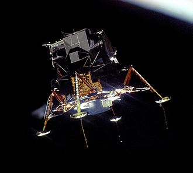
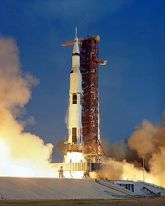

Apollo 11
Apollo 11 was the American spaceflight that first landed humans on the Moon. Commander Neil Armstrong and lunar module pilot Buzz Aldrin landed the Apollo Lunar Module Eagle on July 20, 1969 and Armstrong became the first person to step onto the Moon's surface six hours and 39 minutes later, on July 21 at 02:56 UTC.